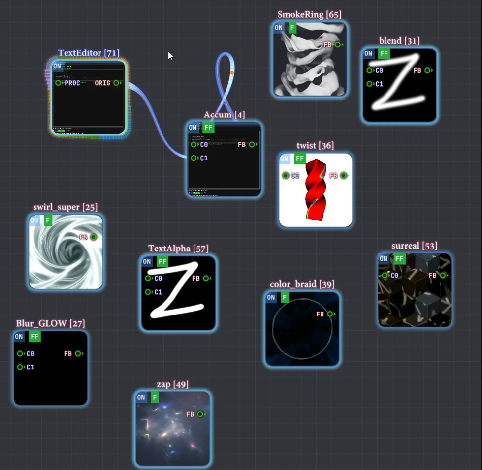
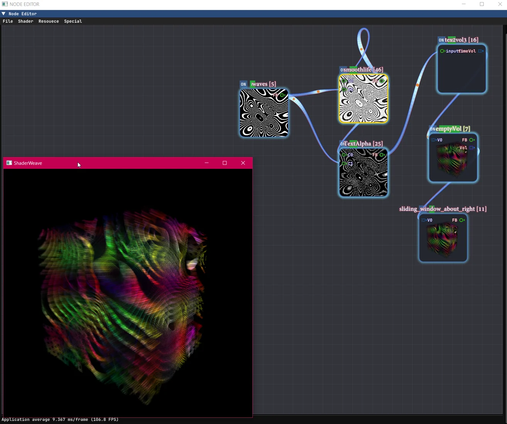
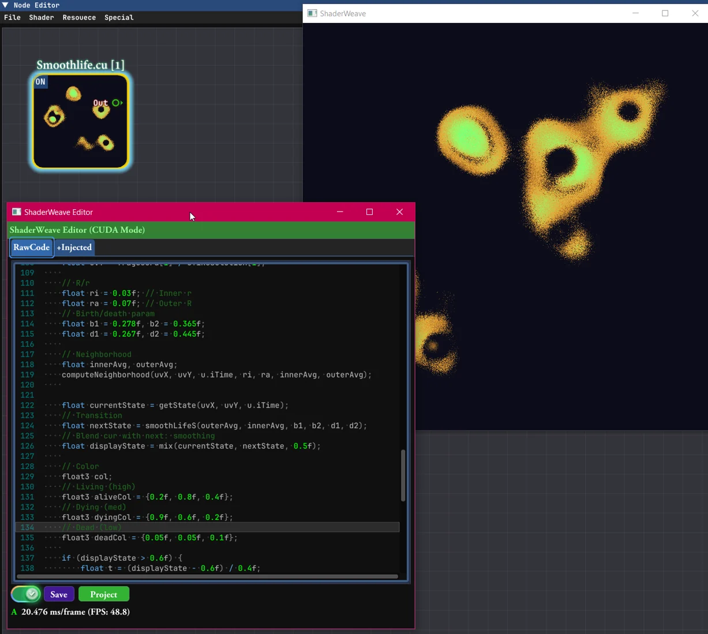

Desktop application
Video
Overview · selected highlights
ShaderWeave
An editable shader graph where intermediate images and previous frames are first-class resources. Compose GLSL passes, preserve feedback state, and connect CUDA or OptiX producers while seeing how a local change propagates through the network.
PassTextureState
- f(x)
Write a pass
Begin with shader code and familiar image-channel inputs.
- ↔
Wire the images
Connect each producer's texture to the next computation.
- t−1
Keep state
Persistent buffers and feedback links make earlier frames available.
- ▧
Inspect every stage
Watch intermediate previews while editing the code and graph.
The program is the network, and its internal images stay visible while it runs.


